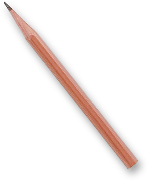
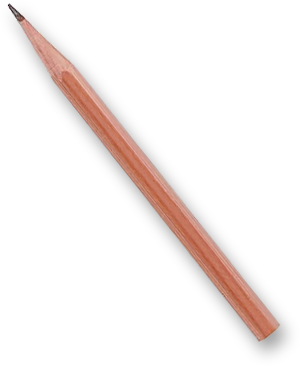
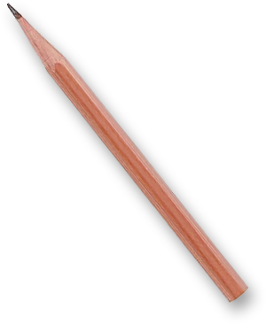
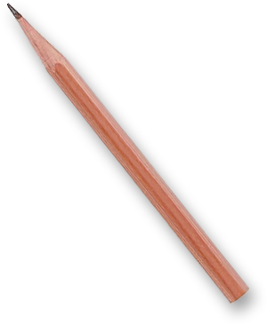
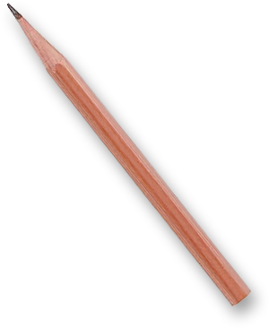

逸仙魔法学院
博学的
孙小偶
请选择您的学院
中国语言文学系
历史学系
哲学系
社会学与人类学学院
博雅学院
岭南学院
外国语学院
法学院
政治与公共事务管理学院
管理学院
马克思主义学院
心理学系
传播与设计学院
资讯管理学院
数学学院
物理学院
化学学院
地理科学与规划学院
生命科学学院
工学院
材料科学与工程学院
电子与信息工程学院
数据科学与计算机学院
环境科学与工程学院
中山医学院
光华口腔医学院
公共卫生学院
药学院
护理学院
体育部
国际金融学院
国际翻译学院
国际关系学院
旅游学院
大气科学学院
海洋科学学院
地球科学与工程学院
化学工程与技术学院
中法核工程与技术学院
港澳珠三角洲研究中心
附属第一医院
孙逸仙纪念医院
附属第三医院
中山眼科中心
肿瘤防治中心
附属第五医院
附属第六医院
请选择对自己的描述
博学的
审问的
慎思的
明辨的
笃行的
共青团中山大学委员会

 


